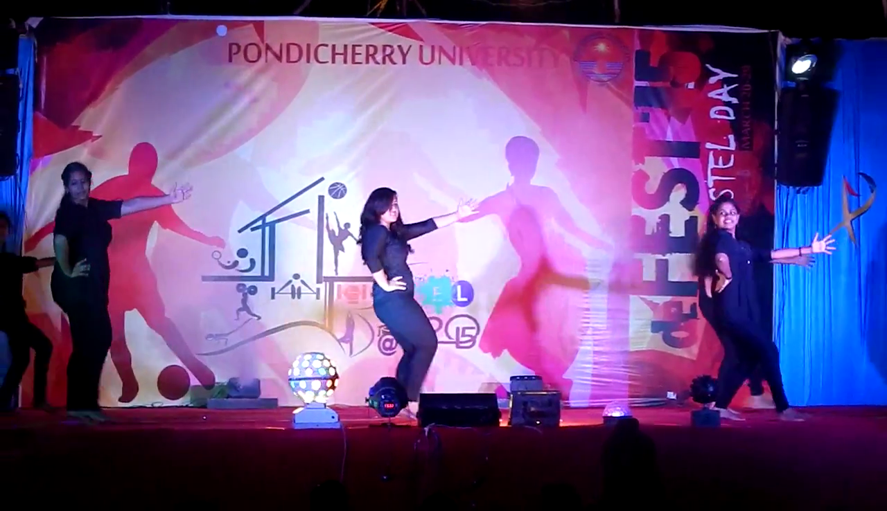

Student Life

At Pondicherry University, hostel is our home away from home. Hostel life is filled with fun and frolic as well as some frisk of study. Most of the student have their first time stay away from their parents when they come to Pondicherry University, but rest assured, there is nothing to worry about. Environment here is absolutely safe and secure. The community is very much caring an helpful.
Starting to live in the hostel is like you have unlocked a door to treasure, treasure of opportunities. Pondicherry University community offers ample of diversified opportunities to aid student's personality development. You can pursue whatever you want. You like dancing - there is dancing club, you like guitar - there is music club.Photography club and whatever your hobby is, you can always find peers with similar hobby in a club. You can dream whatever you want and chase it - sky's the limit.
No Ragging
Ragging is completely prohibited at Pondicherry University. Institute has zero tolerance for ragging. Prospective students has nothing to worry about it. In fact, when you start living at the hostels, you realize that seniors are extremely helpful. They are always nice to juniors. You can learn a great deal from your seniors.
Annual Fests

Fests are important parts of student's Life. These fests are completely organized by students themselves. On the one hand, you get to relax from studies and enjoy, and on the other hand you gain several management and technical experiences that take you a long way in your life.
The freshers are given a party by the seniors , it is usually organized on 1st week of august, this is where the freshers first interact with seniors and get to know more about the college life.
Reverberance is organized during Diwali, EiD, Dusherra, Ganesh Chaturthi, Onam, Tamil New Year etc in which cultural activities and are held like singing and dancing competitions.
Many Events, Seminars, Workshop, Fests are organized by the several Department to get the thing around the world. In which students come foeward to paricipate in different events and give their full effort in that field.
Hostel Day
Amenities
Hostel is equipped with all the modern facilities. Students have access to the Internet via Wi-Fi all 24 hours. Hostel has a gymnasium for keeping your body fit, recreational activities, watching TV and other interesting stuffs. There are table tennis badminton court inside the hostel premises. Basket ball court, Tennis court and Volleyball court are located beside the hostel.
Hostel has smart lighting system, water coolers and geysers on each floor. There are two mess, a Health Center.
Everyday Activities
There are plenty of activities going around in the hostel that makes hostel life fun. There are also inter block activities and competitions in sports and cultural fields. Also a variety of festivals are celebrated like Diwali, Holi, Eid Dusherra, Ganesh Chaturthi, Onam, Tamil New Year etc. Students also go for sports practice, cycling, exercise and other recreational activities every evening. Classes and Labs start from 8am in the morning till 5pm in the evening, 1-2 pm is the lunch break during which students go to mess and have lunch. Saturday and Sunday are holidays during which students get time to relax, enjoy and self study.
Hostel Council
The Hostel council is constituted of cultural,mess,sports,environment,literary,technical, and maintenance secretaries. There is also a general secretary of each year heading all secretaries. These secretaries are elected by the hostel students every year. These secretaries are responsible for proper functioning of their respective councils.
Last but not least the Birthdays....the celebration starts on midnight with cake, soft drinks and of course the ever famous birthday bumps! Celebrating birthdays in the hostels has become a tradition now and everyone looks forward to it. Hostel life are full of once in a life time memories which student cherish for rest of their lives.
So, to sum it up in short, that's Hostel Life... What we call "Home Sweet Home"!